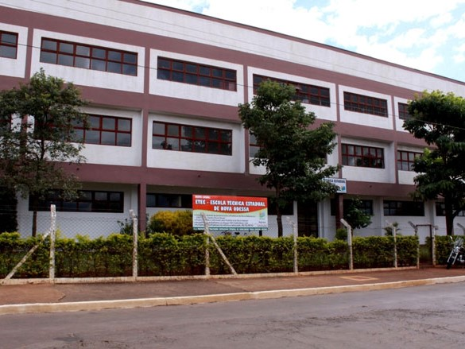
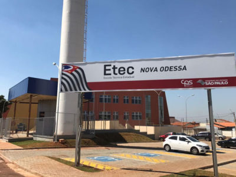
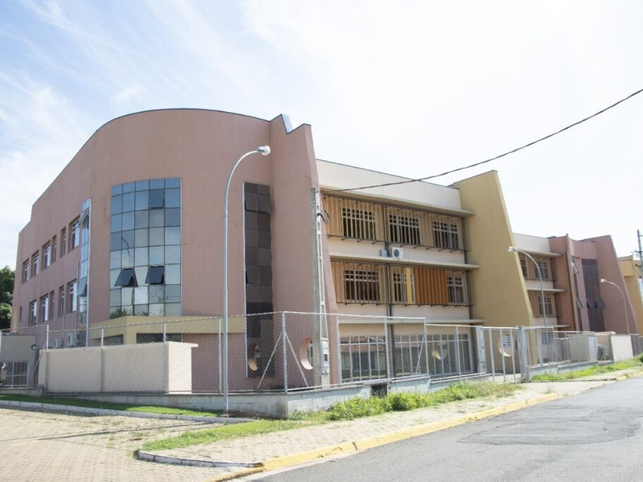

Informações sobre nossa ETEC
No segundo semestre de 2005, iniciaram-se as atividades da Classe Descentralizada da ETEC Polivalente de Americana em Nova Odessa, por meio de um convênio entre o Centro Estadual de Educação Tecnológica "Paula Souza", a FAT - Fundação de Apoio a Tecnologia e a Prefeitura Municipal. Inicialmente, foram oferecidos dois cursos técnicos: Informática e Segurança do Trabalho.
A Classe Descentralizada começou suas operações nas instalações da EMEF "Dante Gazzetta", uma Escola Municipal de Ensino Fundamental no centro de Nova Odessa.
Em 2007, a extensão expandiu sua oferta para incluir os cursos técnicos em Administração e Segurança do Trabalho, encerrando o curso de Informática.
Em 3 de março de 2010, por decreto do Governo do Estado, foi estabelecida a Escola Técnica Estadual de Nova Odessa, tornando-se a unidade de ensino 234 do Centro Estadual de Educação Tecnológica "Paula Souza" - CEETEPS.
Inicialmente, a nova unidade continuou funcionando temporariamente na EMEF "Dante Gazzetta". Entretanto, em junho de 2010, a Prefeitura Municipal alugou um novo prédio no Parque Industrial Harmonia, localizado na rua Theófilo Sniker, nº 38, para abrigar as atividades da ETEC de Nova Odessa após as devidas reformas.
Com mais salas de aula e laboratórios, a unidade ampliou sua capacidade de oferecer vagas para a população local e regional. No segundo semestre de 2010, foi introduzido o curso Técnico em Modelagem do Vestuário.



Nesse mesmo período, a Etec de Nova Odessa, como parte do Plano de Expansão II do Governo do Estado, iniciou novos cursos técnicos na E.E. Prof.ª Silvânia Aparecida Santos, no bairro Santa Luiza II em Nova Odessa. No segundo semestre de 2010, a extensão passou a oferecer o curso Técnico em Logística e, a partir do segundo semestre de 2011, o curso Técnico em Contabilidade.
Em 2012, foi introduzido o novo Curso Técnico em Informática Integrado ao Ensino Médio - ETIM, operando em período integral. Em 2014, a Unidade adicionou o Curso Técnico em Modelagem do Vestuário Integrado ao Ensino Médio e o Técnico em Transações Imobiliárias, este último na EE Silvania Aparecida Santos - Classe Descentralizada.
No segundo semestre de 2015, a Unidade Escolar expandiu sua oferta de vagas para o curso Técnico em Contabilidade na EE Silvania Aparecida Santos - Classe Descentralizada. No primeiro semestre de 2017, a Etec iniciou o Curso Técnico em Marketing Integrado ao Ensino Médio - ETIM. Em outubro de 2017, a sede da Etec de Nova Odessa mudou para a Avenida São Gonçalo, 2770, Jardim da Alvorada.